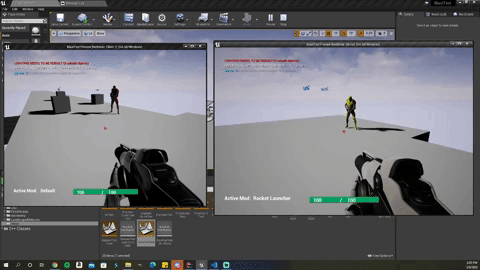
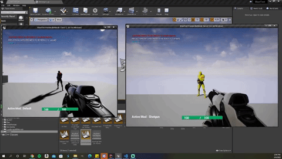
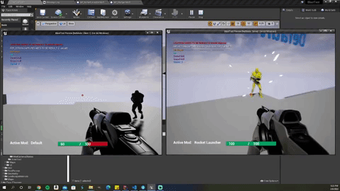
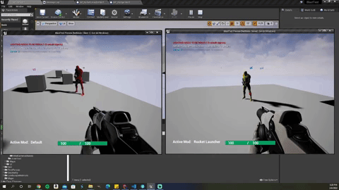

Specifics
3/7/2022


3/8/2022


3/10/2022 & 3/11/2022
//flamethrower .h file
UPROPERTY(BlueprintReadOnly, VisibleAnywhere)
UNiagaraComponent* FlameThrowerEffect = nullptr;
/** This variable is used to determine if a mod that gets held down needs its vfx on or off */
UPROPERTY(BlueprintReadOnly, ReplicatedUsing=OnRep_FireState)
/** Function called after Fire State gets replicated, simply calls the UpdateFireState() */
UFUNCTION()
virtual void OnRep_FireState();
/** Responsible for handling the logic for after the fire state is updated, mainly turning vfx on and off */
virtual void UpdateFiringState();
// if true then vfx is firing, else vfx is not firing
bool bFireState = true;
//flamethrower .cpp file
void AFlameThrowerMod::UpdateFiringState()
{
if (bFireState)
{
FlameThrowerEffect->Activate();
}
else
{
FlameThrowerEffect->Deactivate();
}
}
void AFlameThrowerMod::FireActiveMod(UCameraComponent* CameraComponent, UStaticMeshComponent* MuzzleLocation)
{
// this chunk of code is responsible for turning the vfx on and off on the client
OwningPlayer->UpdateFireState(this, true); // this function sets FireState to true on the server
FireState = true;
UpdateFiringState();
}